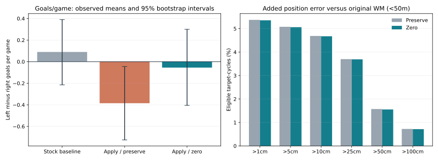

Research collection is complete. The frozen model substantially reduced current-position error. The two live trials recorded worse/neutral game results, but a significant integration defect was discovered while adding the visual debugger. Those match results cannot cleanly establish the gameplay effect of the intended prediction policy. The current build fixes that defect and adds an opt-in inspector for every observer. The original closeout below records the short integration tests. A new corrected-cache batch was reviewed on 2026-11-18.
Full comparison · Half-count launch and checks.
Zero completed 678–702 goals, 78/35/87 W/D/L, versus 635–684, 78/22/100 for preserve. Both have 200 games /4,400 finalized cache-v2 observers. Below 50 m, eligible stale-target error means are 53.99 /53.78 cm, respectively; added error >25 cm remains in 3.79% /3.77% of target-cycles. Zero was correctly applied; no gameplay gain over stock is established. Its observed +0.125 goals difference/game versus preserve has independent-game bootstrap 95% interval [-0.365,+0.610], including zero. Seeds/trajectories are different.
The requested half policy is now available: max(1,floor(original raw posCount/2)), on applied overlays only. Preserve remains default. Native/live correctness checks exist; no half gameplay benchmark has completed.
New report, plots and SoccerWindow replays. All 4,400 observer metadata records identify cache-v2. Scores 635–684, 78/22/100 W/D/L. Eligible stale-target position error below 50 m changed 142.32→53.78 cm (62.21% reduction); added error >25 cm remained in 3.77% of target-cycles. At least one such regression was present in 33.25% of observer-cycles with eligible targets, including frames with simultaneous gains. This is a genuine point-accuracy improvement, not an established gameplay gain. The new zero run is included in the latest comparison above. The old live reports remain pre-fix historical data.
Both200-game live batches used a cache-refresh path that appended duplicate player references and could rerun identity inference after a correction. Fixing this changes decision behavior. Do not use the old400 games to conclude that accurately predicting unseen players cannot improve the team.
The earlier audits correctly measured position errors, count-policy flags, logged applications and scores. Their sampled output replay checks also passed. They did not check uniqueness of the derived decision player containers. That missing structural check matters: a correct point can coexist with a bad planner world representation.
| Evaluation | Original WM mean cm | Used mean cm | Added error >25cm | Added error >50cm |
|---|---|---|---|---|
| Independent offline confirmation, practical policy | 134.98 | 52.30 | 3.64% | 1.70% |
| Live preserve, historical integration | 141.55 | 52.62 | 3.70% | 1.57% |
| Live zero, historical integration | 143.05 | 52.58 | 3.69% | 1.55% |
These figures use eligible stale target-cycles below50m, giving each sample equal weight. Unselected rows retain WM. Live paired errors compare the raw and used states on the actual treatment trajectory; they are not the counterfactual trajectory of a game without the model.
The means improved in all200 games of each live batch. Rare severe regressions remained: maximum added error14.77m /14.04m for preserve/zero. The selector score is not a calibrated correctness probability. In the zero batch, when original WM error was already below10cm, mean error changed1.38→4.85cm;7.90% of that subgroup added >25cm. These truth-defined groups diagnose risk, not deployable oracle gates.
| Batch,200 games each | Goals left–right | Left W/D/L |
|---|---|---|
| All-stock baseline | 678–660 | 87/44/69 |
| Apply / preserve, old integration | 628–705 | 75/30/95 |
| Apply / zero, old integration | 704–715 | 85/30/85 |

Zero recorded better outcomes than preserve, but its unpaired bootstrap95% interval for the goal-difference change included zero. Different seeds and the integration defect prevent a clean causal interpretation. The zero setting does not establish stronger gameplay than stock, and these data also do not establish that a correct integration would fail.
Near-ball diagnostics on10 sampled games per policy showed smaller gains than the global average. For targets within2m of the ball:47.22→33.34cm with preserve, 47.17→32.48cm with zero. A simple one-step forecast using unchanged valid WM velocity also improved on its matched subset. These descriptive measurements do not prove why particular passes or games failed.
Applying and clearing an overlay called updatePlayerStateCache again. That
routine originally assumed one call per cycle: it appended to derived player
lists, used those list sizes during identity/goalie inference and retained
kickable pointers when no new candidate was found. Reusing it as a refresh
therefore had three problems:
The corrected routine clears all derived containers, lookup arrays and current kickable pointers before rebuilding. Identity inference runs on the normal raw update; overlay application/clearing uses a geometry-only rebuild. The raw tracker positions, ages and visual history remain separate from forecasts. Weights, architecture, threshold and sensor configuration were not changed.
New metadata records player_gap_integration=cache-v2. The visual banner also
shows cache-v2, container counts and a uniqueness check. Old live logs lack this
revision marker. Model default remains off.
Short tests verify integration and visualization, not win-rate improvement. At the original debugger handoff, no full corrected-cache batch had been run. The dated follow-up above now records the new 200-game preserve benchmark. No SoccerWindow GUI interaction was automated; protocol geometry and saved logs were checked against the viewer format/source and decision CSVs.
Complete one-game commands, colors and log-directory instructions.
The display supports live DebugClient packets and colored dlog files. It is off by default and does not read fullstate or feed data back into inference.
Exp5 demonstrated substantial reduction in point-estimation error from visual gaps and identified remaining tail risk. It did not produce a clean, validated gameplay gain. The discovered integration defect qualifies the old live outcome conclusions. Keep the data, frozen bundle, old reports and the corrective regression evidence; use the visual game to inspect the corrected state.
Any later gameplay comparison must label cache-v2 separately from the old preserve/zero batches. No oracle model was run as part of the original closeout; the subsequent user-run corrected-cache batch is documented in the dated follow-up above. The earlier oracle-ceiling idea remains an optional future diagnostic, not completed evidence.
References: baseline report, model/refinement study, historical live comparison, debug/cache evidence.